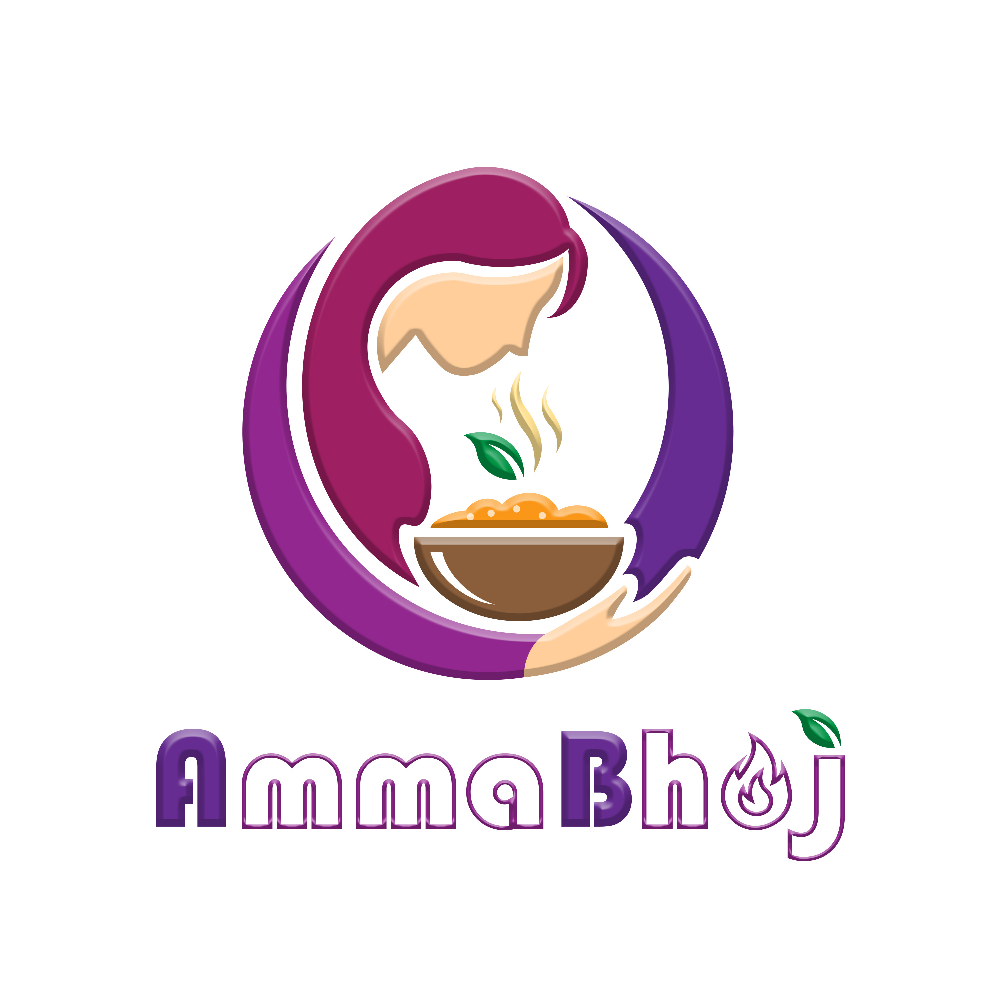

Portfolio
Graphics Designing
A collection of logos, social posters, thumbnails and branding systems — each one built to hold a message clearly and look sharp at any size.
Logo Designs

TN Travo
A vibrant destination branding project for 'TN Travo.' The concept focuses on cultural storytelling, blending iconic regional architecture with modern travel motifs to create a logo that feels both rooted in heritage and inviting to global tourists.

Cross Cut
A precision-engineered identity for 'Cross Cut Frames.' Built on a custom geometric grid, this logo utilizes film-strip aesthetics to convey technical expertise and cinematic storytelling. The design balances bold typography with industry-specific iconography for immediate brand recognition.

Amma Bhoj
A warm, hospitality-focused identity for 'Amma Bhoj.' The design uses a circular badge layout to evoke a sense of home and community. By blending soft, hand-drawn line art with clean, modern typography, the logo communicates a perfect harmony between traditional home-cooked care and contemporary service.

Vijay Vijayam
An elegant, calligraphic identity for 'Vijay Vijayam.' The design features a fluid, hand-drawn aesthetic that evokes sophistication and traditional warmth, while the integration of the floral accent adds a unique, organic touch that distinguishes the brand.

Harris Construction
A bold, industrial identity for 'The Harris Constructions.' The logo utilizes strong, structured typography infused with brickwork textures and architectural icons to immediately communicate stability, reliability, and precision in construction.

UPLOAD SOON
Instagram Posters/flyers
gospel posters

Sunday Service — Bold Typography
A bold Sunday service poster combining strong typography with a clean green and white colour palette. The speaker image is integrated into the composition to create a clear visual focus. Designed for engaging and easy-to-read church event promotion.

Sunday Service — Clean Editorial Design
A clean Sunday service poster designed with a balanced layout and fresh green colour palette. Large typography and structured information create a clear visual hierarchy. Designed to communicate the service details in a simple and elegant way.

Sunday Service — Dynamic Red
A vibrant Sunday service poster built around bold red tones and expressive typography. Layered text and geometric elements create energy while keeping the speaker as the focal point. Designed to create strong visual impact for digital promotion.

Sunday Service — Vibrant Blue
A vibrant Sunday service poster combining blue, purple, and white tones for a modern visual style. The speaker portrait and layered graphic elements create depth and movement. Designed to capture attention while presenting the service information clearly.

Sunday Service — Nature & Faith
A Sunday service poster combining natural mountain imagery with a deep green colour palette. The layered landscape and typography create a peaceful and faith-centered atmosphere. Designed to communicate a sense of worship, hope, and spiritual connection.

Sunday Service — Blue & Gold
A dynamic Sunday service poster featuring a blue, purple, and gold colour combination. Bold typography, geometric lighting, and the speaker portrait create a strong promotional composition. Designed for an energetic and attention-grabbing digital presentation.
Restaurant flyers

Tasty Heaven — Burger Promotion
A bold restaurant promotional poster designed to showcase a delicious burger offer. Combines strong typography, vibrant food imagery, and a warm orange-black colour palette. Designed to create visual impact while clearly communicating the discount and ordering details.
UPLOAD ZOON
UPLOAD SOON
Commercial & Product Designs

BMW M4 Competition — Performance Campaign
A premium automotive advertising poster designed for the BMW M4 Competition, combining bold typography, monochromatic styling, and a powerful product-focused composition. The layout highlights the vehicle’s performance and key specifications while maintaining a clean, modern visual hierarchy. Created in Photoshop as a self-directed concept inspired by high-end automotive advertising.

Porsche 718 Cayman GT4 — Automotive Campaign Concept
A premium automotive poster concept created for the Porsche 718 Cayman GT4. Designed around a bold black-and-yellow visual system with dynamic typography and performance-focused details. Created as a personal design project to explore automotive advertising and visual composition.
UPLOAD SOON
UPLOAD SOON
UPLOAD SOON
UPLOAD ZOON
Photo Frame designs
Bible verse

The Lord Is My Shepherd
A peaceful Bible verse photo frame inspired by Psalm 23:1. Designed with a warm, minimal composition and pastoral imagery. Created to bring a calm and faith-centered atmosphere to any space.

Faith Can Move Mountains
A bold Bible verse frame inspired by Matthew 17:20. Combines expressive typography with vibrant mountain imagery to emphasize faith and strength. Designed as an uplifting visual reminder for everyday inspiration.

You Are the Light of the World
A modern Bible verse photo frame inspired by Matthew 5:14. Uses dramatic lighting, bold typography, and a globe-inspired visual to represent hope and guidance. Designed to create a meaningful and inspiring visual statement.
Birthday frames

Birthday Photo Frame — Floral Celebration
A decorative birthday photo frame combining floral elements, portrait composition, and elegant typography. Designed with a soft, celebratory visual style to highlight the birthday subject. Created as a personalized social-media and event photo frame design.
UPLOAD SOON
UPLOAD SOON
YouTube Thumbnails

Word of Encouragement — YouTube Thumbnail - 1
A cinematic YouTube thumbnail designed to create a strong visual focus and attract viewer attention. Combines bold gold typography, portrait composition, lighting effects, and a dark premium background. Designed for a Christian encouragement and message-based YouTube video.
Workflow: Photoshop + AI-assisted for enhanced visual appeal

Word of Encouragement — YouTube Thumbnail - 2
A cinematic YouTube thumbnail designed to create a strong visual focus and attract viewer attention. Combines bold gold typography, portrait composition, lighting effects, and a dark premium background. Designed for a Christian encouragement and message-based YouTube video.
Workflow: Photoshop + AI-assisted for enhanced visual appeal